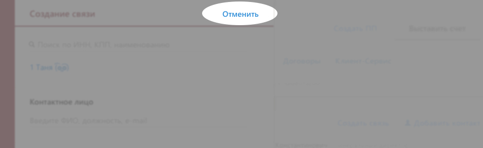

Сколько людей создают новые связи, несмотря на миграцию КС.
_trackEvent(category, action, opt_label, opt_value, opt_noninteraction)
Category: client-connection
Action: click
Label: create-link
Посмотрим, может кто-то не понял, что это за панелька, что в ней делать =)

_trackEvent(category, action, opt_label, opt_value, opt_noninteraction)
Category: client-connection
Action: cancel
Label: cancel-link
Самый главный вопрос, который всех волнует =) Когда появляется статус «связь создана» отправляем два события:
Category: client-connection
Action: created
Label: created + <идентификатор связи>
Category: client-connection
Action: created
Label: created
Отправляем по кнопке «показать»: одну пачку без id, вторую—с id.
Category: client-connection
Action: show
// это все сначала без id связи, а потом с id
Label: clients-N //кол-во клиентов в связи
Label: star //если выбран «звездный» клиент
Label: contact //если выбрано КЛ
Label: contact-empty //если не выбрано КЛ
Label: product-<название продукта> //шлем каждый продукт отдельно
Label: comment //если если заполнен коммент
Посмотрим, удаляют ли:
Category: client-connection
Action: creating
Label: delete-client //ссылка «удалить» у клиента
Label: delete-contact //ссылка «удалить» у контакта
Сколько возникает ошибка и что дальше при этом делают.
Category: client-connection
Action: delete
Label: delete-message //считаем, что показалось сообщение
Label: delete-and-close //нажали на «удалить и закрыть»